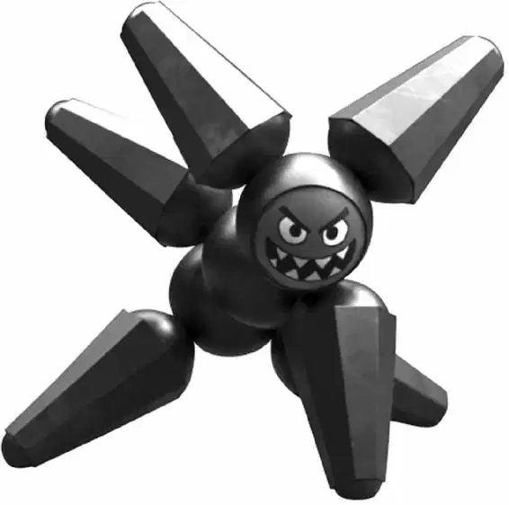

Not quite a big city, and not quite a small town, San Fransokyo had always been a mysterious mix of old and new. On foggy nights, the bright skyscraper lights and the neon of the modern city softened, giving the old Victorian pagodas and forgotten alleyways of the past an inviting glow.
One such night, a young teenage boy named Hiro Hamada was making his way down an old brick alley. He was looking for a place where grown men came to fight.
The boy felt a little nervous when he finally approached a rowdy crowd. Men were jammed around a fighting ring, chanting, “Ya-ma! Ya-ma!”
Mr. Yama, a large, sumo-sized man, strutted into the ring and held up his huge hands in victory. It had been a fight “to the death,” and Mr. Yama’s tricked-out eighteen-inch robot—which had claws for one hand and a spinning saw wheel for the other—had just decapitated the competition. The remains of the defeated robot were unceremoniously tossed onto a pile of other dismembered opponents.
“Who’s next?” Mr. Yama snarled, scanning the crowd. The spectators exchanged money and prepared to place their bets. “Who has the guts to step into the ring with Little Yama?” The crowd stared at the big man’s fierce robot and shrank away. Some even hid their bots behind their backs.
Then a voice said, “Can I try?” The crowd parted and everyone stared at Hiro.
Yama’s eyes narrowed. “What’s your name, little boy?”
“It’s Hiro. Hiro Hamada.”
The four-hundred pound man folded his thick arms over his chest. “Go home, Zero. Bot-fighting isn’t for little boys with toy robots. You have to pay to play.”
“Is this enough?” Hiro asked, holding up a wad of bills. Yama smiled and placed Little Yama back in the ring.
Hiro held up a small, unimpressive twelve-inch robot. He tried to seem confident. He’d learned a long time ago that when you bot-fought in this part of town, you never let them see your fear.
Hiro put Megabot down into the ring. Immediately, the tiny robot toppled over. Yama couldn’t hide his smirk as he sat on his mat. Hiro also sat down, his mat across the ring from Yama’s. The bettors went crazy. Piles of cash grew higher and higher.
The referee stepped up and lowered an open umbrella between the two. “Two bots enter! One bot leaves!” she shouted. “Fighters ready? Fight!”
Little Yama quickly advanced on Megabot, towering over him. In seconds, he had sliced through Hiro’s bot! The crowd cheered.
But without warning, Hiro’s seemingly broken bot reassembled. “Megabot, destroy!” Hiro ordered.
Hiro’s bot counterattacked with such deadly force, the fight was over in seconds. Little Yama was torn to pieces. Bits of him sparked and jumped all over the ring.
With the click of Hiro’s remote control, Megabot gave a cute yet awkward bow. The whole audience was silent.
Mr. Yama was stunned. “But ... wha—? How? This is not possible!”
Hiro smiled. “No one likes a sore loser, big guy. But everyone loves a winner!” He held up his bot, and the crowd chanted, “Hi-ro! Hi-ro! Hi-ro!”
“No!” Mr. Yama yelled, and the crowd became silent. “No one can beat Little Yama. You cheated, and I want to know how! Give me that bot.” Several of Mr. Yama’s large associates suddenly moved toward Hiro.
“I can see you’re upset. Here’s what I’m gonna do: I’ll teach you everything I know about high-torque micromotors,” Hiro said as the huge men backed him into a corner. “I charge an hourly rate—it’s pricey, but worth it. Before you know it, you’ll be making robots that aren’t totally junky. First class is free!” Hiro was really starting to sweat when a scooter came out of nowhere and tore down the alley. It skidded to a stop, knocking Mr. Yama and his goons to the ground.
“Get on!” the rider yelled to Hiro.
